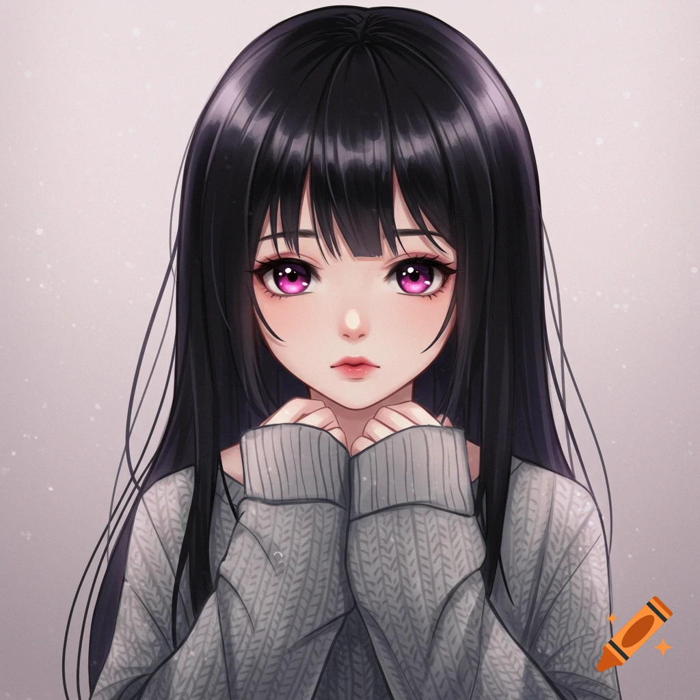
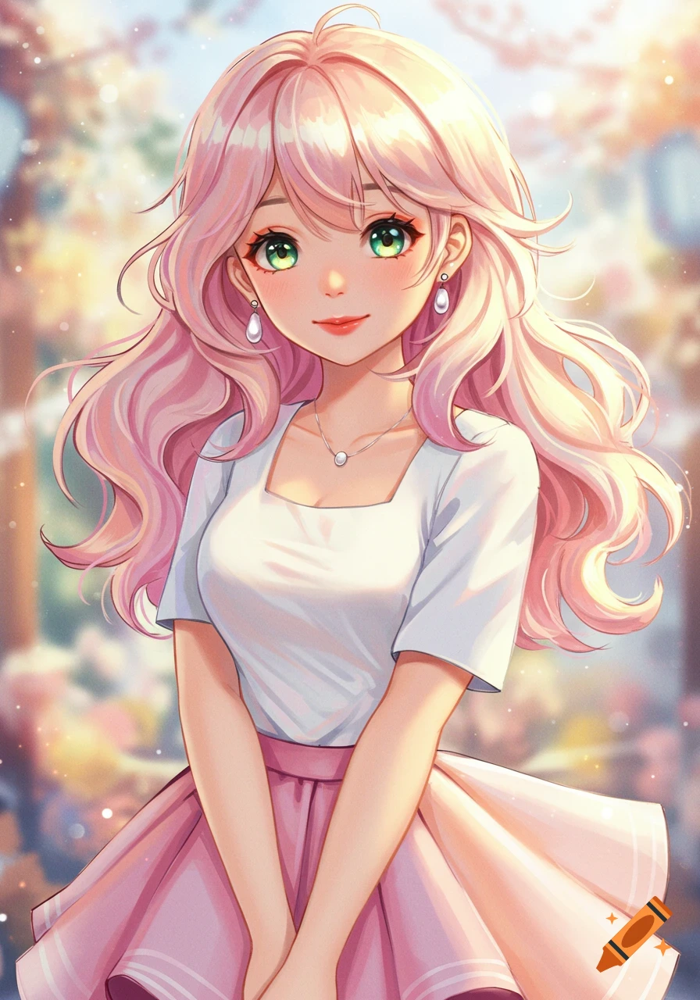

A Message for You🤍
From Mahir Ahmed
A Special Beginning ❤️✨
Every love story begins with a simple moment. Sometimes it starts with a smile, sometimes with a conversation, and sometimes with a feeling that cannot be explained in words. Love has a quiet way of entering the heart and slowly becoming something unforgettable. 💖
From Strangers to Something Special ❤️✨
Sometimes life connects two people in the most unexpected way. At first, everything feels unknown and uncertain, but slowly comfort begins to grow. Conversations that once felt simple start to mean something deeper. A connection forms that cannot easily be explained, only felt. And before you realize it, someone who was once a stranger starts becoming a special part of your thoughts. 💖

The Magic of You ✨💖
There is something truly magical about certain people. Not just how they look, but how they make everything around them feel brighter. Their presence feels warm, calming, and unforgettable. Every small detail about them feels special in its own way. It feels like they were created with extra care, just to bring a little more light into the world. 💕
The Strength Within You 💫✨
True beauty is not only about appearance—it is about strength, kindness, and character. Some people carry a quiet strength that inspires others without even trying. They face life with courage, patience, and a beautiful heart. Their presence becomes a reminder that real beauty always comes from within. 💖✨
The Best Part of My Day 🤞💖
Some moments in life feel small, but they bring the biggest happiness. A simple message, a simple conversation, or even a single thought can change the entire mood of a day. There is a special kind of joy in talking to someone who makes everything feel lighter, calmer, and more meaningful. Those moments slowly become the best part of everyday life. 💕

A Wish from the Heart 💫💖
Sometimes the heart creates wishes that cannot be spoken out loud. Wishes to be closer, to understand more, to share more moments, and to hold onto the feeling of connection. Even when life is imperfect, the heart continues to hope for warmth, care, and emotional closeness. And in those silent wishes, love quietly grows stronger. 💖
Always Here for You 💖✨
Real connection is about being there—through happiness, sadness, and everything in between. Someone who truly cares never leaves in difficult moments. They stay, they listen, and they support without conditions. That kind of presence becomes a quiet strength in life, a reminder that you are never truly alone. 💕
The Beauty of You ✨💖
Beauty is not only seen—it is felt. It is in the way someone smiles, the way they speak, and the way they treat others with kindness. Some people naturally leave a lasting impression wherever they go. Not just because of how they look, but because of the energy they carry within them. 💖✨
Absolutely Breathtaking ✨💖
Some people have a presence that is impossible to ignore. They don’t need to try hard to stand out—it happens naturally. Their confidence, charm, and personality make them unforgettable in every way. They don’t just enter a space—they change its entire atmosphere. 💕✨
Grateful for You 🌹❤
Gratitude is one of the most powerful emotions. Being thankful for someone means appreciating the moments, the conversations, and the emotional connection shared. Some people come into life and quietly become important without even realizing it. And that presence alone becomes something to always be grateful for. 💕
Expect From You ❤️✨
Every meaningful connection is built on hope, trust, and understanding. We naturally wish for consistency, care, and emotional support from those who matter to us. And sometimes, we simply hope that the bond continues to grow stronger with time. Because some connections feel too special to let go of. 🥺💖
I Love You ❤️
Endless feelings, endless care ❤️